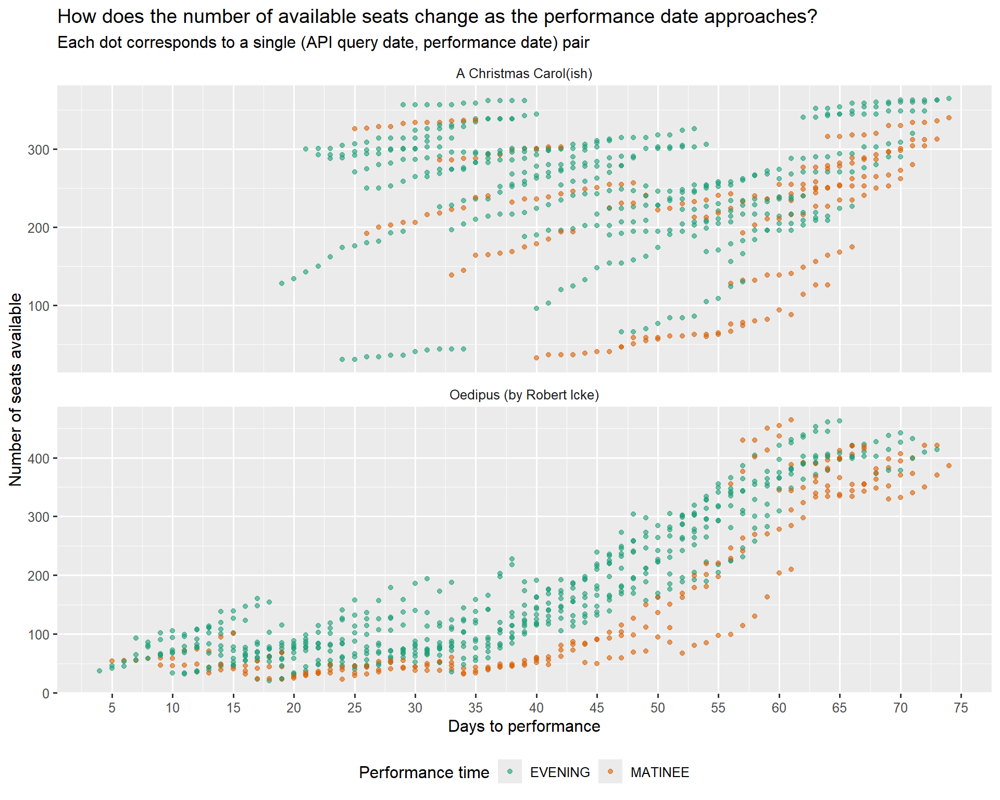

Code
library(DBI)
library(bigrquery)
library(dplyr)
library(dbplyr)
library(ggplot2)library(DBI)
library(bigrquery)
library(dplyr)
library(dbplyr)
library(ggplot2)theme_set(theme_gray(base_size = 12)) +
theme_update(
legend.position = "bottom",
strip.background = element_blank(),
)# Configure the connection
# It turns out that this just works, and authentication is automagical (!?)
con <- dbConnect(
bigrquery::bigquery(),
project = "todaytix-theatre-data",
dataset = "raw_todaytix_api"
)We want to query the show_availability table in the raw_todaytix_api dataset. But let’s also do some simple transformations to test the connection:
# Make a connection to table in the database
dat_show_availability <- tbl(con, "show_availability")dat_local <- dat_show_availability |>
mutate(performanceDate = as.Date(performanceTime),
requestDate = as.Date(requestTime)) |>
select(showId, requestDate, performanceDate, performanceType, availableSeatCount) |>
#show_query()
collect()Note that calculating days_to_performance migth need me to write the literal SQL syntax for BigQuery, as the syntax below doesn’t work!
show_list <- tribble(
~show_name, ~show_id, ~date_start, ~date_end,
"A Christmas Carol(ish)", "42462", "20241101", "20241231",
"Oedipus (by Robert Icke)", "41707", "20241101", "20241231"
)
dat <- dat_local |>
mutate(days_to_performance = as.integer(performanceDate - requestDate)) |>
inner_join(show_list, by = c("showId" = "show_id"))
glimpse(dat)Rows: 1,348
Columns: 9
$ showId <chr> "42462", "42462", "42462", "42462", "42462", "4246…
$ requestDate <date> 2024-10-21, 2024-10-21, 2024-10-21, 2024-10-21, 2…
$ performanceDate <date> 2024-11-16, 2024-11-18, 2024-11-19, 2024-11-20, 2…
$ performanceType <chr> "EVENING", "EVENING", "EVENING", "EVENING", "EVENI…
$ availableSeatCount <int> 180, 314, 300, 301, 43, 334, 291, 223, 274, 335, 3…
$ days_to_performance <int> 26, 28, 29, 30, 31, 32, 32, 33, 33, 35, 36, 37, 38…
$ show_name <chr> "A Christmas Carol(ish)", "A Christmas Carol(ish)"…
$ date_start <chr> "20241101", "20241101", "20241101", "20241101", "2…
$ date_end <chr> "20241231", "20241231", "20241231", "20241231", "2…Onto some plotting! This is a fairly silly, and not very readable plot… The gist is that each day I query TodayTix API for the seat count for a couple of shows in a fixed 2-month time window. This means that for each performance date I have as many data points as the number of days I queried the API. The first question is - how quickly does the number of available seats go down as the performance date approaches? As displayed below, the pattern in the data looks reasonble for Oedipus, but frankly rathe strange for A Christmas Carol(ish)! Perhaps because Oedipus is already playing, and is also more in demand?
dat |>
ggplot() +
geom_point(aes(x = days_to_performance, y = availableSeatCount, color = performanceType),
alpha=0.6) +
facet_wrap(~show_name, nrow=2, scales="free_y") +
scale_x_continuous(breaks = seq(0, 80, 5)) +
scale_color_brewer(palette="Dark2") +
labs(x="Days to performance",
y= "Number of seats available",
color="Performance time",
title="How does the number of available seats change as the performance date approaches?",
subtitle="Each dot corresponds to a single (API query date, performance date) pair")
I will be exploring this data much more in the future…